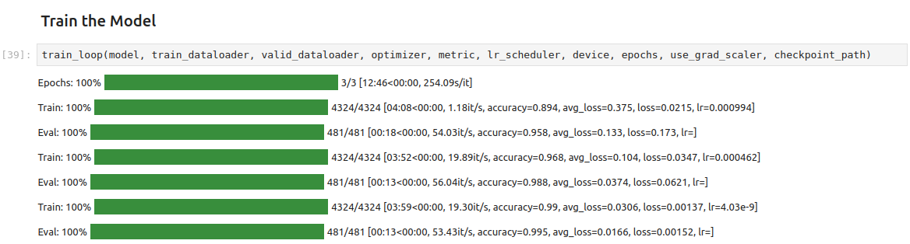

Getting Started with Intel’s PyTorch Extension for Arc GPUs on Ubuntu
- Introduction
- Enable Resizable BAR in BIOS
- Install Ubuntu
- Verify Resizable BAR
- Install Drivers
- Install oneAPI Base Toolkit
- Update the Bash Run Commands File
- Set Up a Python Environment
- Modify PyTorch Code
- Conclusion
Introduction
In this tutorial, I’ll guide you through setting up Intel’s PyTorch extension on Ubuntu to train models with their Arc GPUs. The extension provides Intel’s latest feature optimizations and hardware support before they get added to PyTorch. Most importantly for our case, it now includes experimental support for Intel’s Arc GPUs and optimizations to take advantage of their Xe Matrix Extensions (XMX).
The XMX engines are dedicated hardware for performing matrix operations like those in deep-learning workloads. Intel’s PyTorch extension allows us to leverage this hardware with minimal changes to existing PyTorch code.
To illustrate this, we’ll adapt the training code from my beginner-level PyTorch tutorial, where we fine-tune an image classification model from the timm library for hand gesture recognition. By the end of this tutorial, you’ll know all the steps required to set up Ubuntu for training PyTorch models using Arc GPUs.
The current setup process is for version 2.0.110+xpu of Intel’s PyTorch extension.
Enable Resizable BAR in BIOS
If you have an Arc GPU, one of the first things you should do is enable Resizable BAR. Resizable BAR allows a computer’s processor to access the graphics card’s entire memory instead of in small chunks. The Arc GPUs currently require this feature to perform as intended. You can enable the feature in your motherboard’s BIOS.
Here are links on how to do this for some of the popular motherboard manufacturers:
Install Ubuntu
Intel’s documentation recommends Ubuntu 22.04 LTS or newer. The LTS releases have the minimum required Linux kernel version as of 22.04.3, so we can stick with that. If you already have Ubuntu 22.04 LTS installed, ensure it’s fully updated.
The Ubuntu website provides a step-by-step guide to installing Ubuntu on your PC, and you can install it alongside an existing operating system.
- Tutorial: Install Ubuntu with a Bootable USB Stick
That tutorial calls for at least 25GB of free storage space, but I recommend at least 80 GB for our case. The oneAPI Base Toolkit used by Intel’s PyTorch extension alone takes up approximately 15GB. Additional packages, applications, models, and datasets can quickly fill space.
Verify Resizable BAR
Once you log into Ubuntu, you can verify Resizable BAR is active by opening a terminal (Ctrl+Alt+T) and running the following command:
lspci -v |grep -A8 VGAHere is the output for the Arc A770 16GB card:
$ lspci -v |grep -A8 VGA
00:02.0 VGA compatible controller: Intel Corporation RocketLake-S GT1 [UHD Graphics 750] (rev 04) (prog-if 00 [VGA controller])
Subsystem: ASRock Incorporation RocketLake-S GT1 [UHD Graphics 750]
Flags: bus master, fast devsel, latency 0, IRQ 172
Memory at 6401000000 (64-bit, non-prefetchable) [size=16M]
Memory at 4000000000 (64-bit, prefetchable) [size=256M]
I/O ports at 3000 [size=64]
Expansion ROM at 000c0000 [virtual] [disabled] [size=128K]
Capabilities: <access denied>
Kernel driver in use: i915
--
03:00.0 VGA compatible controller: Intel Corporation DG2 [Arc A770] (rev 08) (prog-if 00 [VGA controller])
Subsystem: Intel Corporation DG2 [Arc A770]
Flags: bus master, fast devsel, latency 0, IRQ 173
Memory at a1000000 (64-bit, non-prefetchable) [size=16M]
Memory at 6000000000 (64-bit, prefetchable) [size=16G]
Expansion ROM at a2000000 [disabled] [size=2M]
Capabilities: <access denied>
Kernel driver in use: i915
Kernel modules: i915Note that the [size=16GB] matches the total memory for the GPU. If you have the A750 8GB variant, it should read [size=8GB] for your GPU.
Install Drivers
Next, we will install the compute, media, and display runtimes.
Add Intel Graphics drivers Repository
Run the following bash commands to add the Intel Graphics drivers repository:
sudo -v && \
wget -qO - https://repositories.intel.com/graphics/intel-graphics.key | \
sudo gpg --dearmor --output /usr/share/keyrings/intel-graphics.gpg && \
echo "deb [arch=amd64,i386 signed-by=/usr/share/keyrings/intel-graphics.gpg] https://repositories.intel.com/graphics/ubuntu jammy arc" | \
sudo tee /etc/apt/sources.list.d/intel-gpu-jammy.list && \
sudo apt-get updateThe above bash commands perform the following steps:
- Refresh sudo access to avoid multiple password prompts.
- Download the Intel graphics repository’s public key.
- Convert the downloaded key to binary and save it.
- Add the Intel graphics repository to the APT’s list of package sources.
- Update the package list from all configured repositories, including the newly added Intel repository.
Install packages
Now, we can install the required packages.
sudo apt-get install -y \
intel-opencl-icd intel-level-zero-gpu level-zero \
intel-media-va-driver-non-free libmfx1 libmfxgen1 libvpl2 \
libegl-mesa0 libegl1-mesa libegl1-mesa-dev libgbm1 libgl1-mesa-dev libgl1-mesa-dri \
libglapi-mesa libgles2-mesa-dev libglx-mesa0 libigdgmm12 libxatracker2 mesa-va-drivers \
mesa-vdpau-drivers mesa-vulkan-drivers va-driver-all vainfo hwinfo clinfo mesa-utilsVerify the Installations
We can verify everything is installed correctly by running the following commands.
Verify the device is working with the i915 driver
Run the following command to confirm the device is using Intel’s graphics driver:
hwinfo --displayHere is the expected output for the A770:
$ hwinfo --display
06: PCI 300.0: 0300 VGA compatible controller (VGA)
[Created at pci.386]
Unique ID: svHJ.nDfmnmUHKH4
Parent ID: GA8e.mr2N3fBJq5F
SysFS ID: /devices/pci0000:00/0000:00:01.0/0000:01:00.0/0000:02:01.0/0000:03:00.0
SysFS BusID: 0000:03:00.0
Hardware Class: graphics card
Model: "Intel VGA compatible controller"
Vendor: pci 0x8086 "Intel Corporation"
Device: pci 0x56a0
SubVendor: pci 0x8086 "Intel Corporation"
SubDevice: pci 0x1020
Revision: 0x08
Driver: "i915"
Driver Modules: "i915"
Memory Range: 0xa1000000-0xa1ffffff (rw,non-prefetchable)
Memory Range: 0x6000000000-0x63ffffffff (ro,non-prefetchable)
Memory Range: 0xa2000000-0xa21fffff (ro,non-prefetchable,disabled)
IRQ: 173 (701506 events)
Module Alias: "pci:v00008086d000056A0sv00008086sd00001020bc03sc00i00"
Driver Info #0:
Driver Status: i915 is active
Driver Activation Cmd: "modprobe i915"
Config Status: cfg=new, avail=yes, need=no, active=unknown
Attached to: #25 (PCI bridge)Verify Media drivers installation
Run the following commands to verify the media drivers installation:
export DISPLAY=:0.0; vainfoHere is a snippet of the expected output for the A770:
$ export DISPLAY=:0.0; vainfo
Trying display: wayland
libva info: VA-API version 1.18.0
libva info: Trying to open /usr/lib/x86_64-linux-gnu/dri/iHD_drv_video.so
libva info: Found init function __vaDriverInit_1_18
libva info: va_openDriver() returns 0
vainfo: VA-API version: 1.18 (libva 2.17.0)
vainfo: Driver version: Intel iHD driver for Intel(R) Gen Graphics - 23.1.4 (12e141d)
vainfo: Supported profile and entrypoints
VAProfileNone : VAEntrypointVideoProc
VAProfileNone : VAEntrypointStats
...Verify Computing drivers installation
Run the following command to get a list of available OpenCL platforms and devices:
clinfo -lThe Arc GPU should show as one of the available devices. On my computer, the Arc GPU is device 0 for platform 2:
$ clinfo -l
Platform #0: Intel(R) FPGA Emulation Platform for OpenCL(TM)
`-- Device #0: Intel(R) FPGA Emulation Device
Platform #1: Intel(R) OpenCL
`-- Device #0: 11th Gen Intel(R) Core(TM) i7-11700K @ 3.60GHz
Platform #2: Intel(R) OpenCL HD Graphics
`-- Device #0: Intel(R) Arc(TM) A770 Graphics
Platform #3: Intel(R) OpenCL HD Graphics
`-- Device #0: Intel(R) UHD Graphics 750We can run the following command to get the properties for that device:
clinfo -d 2:0The command will output a lot of information. Here is the top section of the output for the A770:
$ clinfo -d 2:0
Platform Name Intel(R) OpenCL HD Graphics
Device Name Intel(R) Arc(TM) A770 Graphics
Device Vendor Intel(R) Corporation
Device Vendor ID 0x8086
Device Version OpenCL 3.0 NEO
Device UUID 8680a056-0800-0000-0300-000000000000
Driver UUID 32332e30-352e-3235-3539-332e31380000
Valid Device LUID No
Device LUID 400f-ca04fd7f0000
Device Node Mask 0
Device Numeric Version 0xc00000 (3.0.0)
Driver Version 23.05.25593.18
Device OpenCL C Version OpenCL C 1.2
Device OpenCL C all versions OpenCL C
...Verify 3D drivers installation
Lastly, we can run the following command to verify the 3D drivers’ installation:
glxinfo | grep OpenGLHere is the output for the A770:
$ glxinfo |grep OpenGL
OpenGL vendor string: Intel
OpenGL renderer string: Mesa Intel(R) Arc(tm) A770 Graphics (DG2)
OpenGL core profile version string: 4.6 (Core Profile) Mesa 23.1.0-devel (git-722bcd7973)
OpenGL core profile shading language version string: 4.60
OpenGL core profile context flags: (none)
OpenGL core profile profile mask: core profile
OpenGL core profile extensions:
OpenGL version string: 4.6 (Compatibility Profile) Mesa 23.1.0-devel (git-722bcd7973)
OpenGL shading language version string: 4.60
OpenGL context flags: (none)
OpenGL profile mask: compatibility profile
OpenGL extensions:
OpenGL ES profile version string: OpenGL ES 3.2 Mesa 23.1.0-devel (git-722bcd7973)
OpenGL ES profile shading language version string: OpenGL ES GLSL ES 3.20
OpenGL ES profile extensions:Install oneAPI Base Toolkit
Next, we install the oneAPI Base Toolkit, which Intel’s PyTorch extension depends on. As mentioned earlier, the toolkit will take up approximately 15GB of disk space. We’ll install the toolkit using the APT package manager.
Run the following commands to add the package repository and install the toolkit:
sudo -vwget -O- https://apt.repos.intel.com/intel-gpg-keys/GPG-PUB-KEY-INTEL-SW-PRODUCTS.PUB \ | gpg --dearmor | sudo tee /usr/share/keyrings/oneapi-archive-keyring.gpg > /dev/nullecho "deb [signed-by=/usr/share/keyrings/oneapi-archive-keyring.gpg] https://apt.repos.intel.com/oneapi all main" | sudo tee /etc/apt/sources.list.d/oneAPI.listsudo apt updatesudo apt install intel-basekitThe above bash commands perform the following steps:
- Refresh sudo access to avoid multiple password prompts.
- Download the system keyring for the repository.
- Add the signed entry to APT sources and configure the APT client to use the Intel repository.
- Update the list of available packages.
- Install the toolkit.
Update the Bash Run Commands File
We need to add the following lines to the end of the bash run commands file (.bashrc) for Intel’s extension to use the oneAPI toolkit:
export ONEAPI_ROOT=/opt/intel/oneapi
export DPCPPROOT=${ONEAPI_ROOT}/compiler/latest
export MKLROOT=${ONEAPI_ROOT}/mkl/latest
export IPEX_XPU_ONEDNN_LAYOUT=1
source ${ONEAPI_ROOT}/setvars.sh > /dev/nullThe above lines perform the following steps:
- Add the installation location for the oneAPI toolkit as an environment variable.
- Add the installation location for the DPC++ Compiler as an environment variable.
- Add the installation for the Math Kernel Library as an environment variable.
- Set the oneDNN memory layout to improve training speed.
- Initialize the oneAPI environment.
You can run the following commands to add the above lines to the .bashrc file and apply the changes to the current shell:
echo -e "\nexport ONEAPI_ROOT=/opt/intel/oneapi\nexport DPCPPROOT=\${ONEAPI_ROOT}/compiler/latest\nexport MKLROOT=\${ONEAPI_ROOT}/mkl/latest\nexport IPEX_XPU_ONEDNN_LAYOUT=1\nsource \${ONEAPI_ROOT}/setvars.sh > /dev/null" >> ~/.bashrc \
source ~/.bashrcSet Up a Python Environment
Now, we can create a Python environment to run the training code. We’ll install a patched version of PyTorch needed for Intel’s extension, the extension itself, and the other dependencies for the training code.
Install Mamba Package Manager
We’ll use the Mamba package manager to create the Python environment. You can learn more about it in my getting started tutorial.
The following bash commands will download the latest release, install it, and relaunch the current bash shell to apply the relevant changes:
wget "https://github.com/conda-forge/miniforge/releases/latest/download/Mambaforge-$(uname)-$(uname -m).sh"
bash Mambaforge-$(uname)-$(uname -m).sh -b
~/mambaforge/bin/mamba init
bashCreate a Python Environment
Next, we’ll create a Python environment and activate it. The current version of the extension supports Python 3.11, so we’ll use that.
mamba create --name pytorch-arc python=3.11 -y
mamba activate pytorch-arcInstall PyTorch and Intel’s PyTorch extension
The following command will install the required versions of PyTorch and torchvision, along with the extension itself:
python -m pip install torch==2.0.1a0 torchvision==0.15.2a0 intel_extension_for_pytorch==2.0.110+xpu -f https://developer.intel.com/ipex-whl-stable-xpuInstall additional dependencies
Lastly, we’ll install the other training code dependencies. You can learn about these dependencies (here).
# Install additional dependencies
pip install datasets jupyter matplotlib pandas pillow timm torcheval torchtnt tqdm
# Install utility packages
pip install cjm_pandas_utils cjm_pil_utils cjm_pytorch_utilsModify PyTorch Code
It’s finally time to train a model. The Jupyter Notebooks with the original and modified training code are available on GitHub at the links below.
You can also download the notebooks to the current directory by running the following commands:
wget https://raw.githubusercontent.com/cj-mills/pytorch-timm-gesture-recognition-tutorial-code/main/notebooks/pytorch-timm-image-classifier-training.ipynb \
wget https://raw.githubusercontent.com/cj-mills/pytorch-timm-gesture-recognition-tutorial-code/main/notebooks/intel-arc-pytorch-timm-image-classifier-training.ipynbOnce downloaded, run the following command to launch the Jupyter Notebook Environment:
jupyter notebookImport PyTorch Extension
We import Intel’s PyTorch extension with the following code:
import torch
import intel_extension_for_pytorch as ipex
print(f'PyTorch Version: {torch.__version__}')
print(f'Intel PyTorch Extension Version: {ipex.__version__}')Note that we need to import PyTorch before the extension. Also, if you get the following user warning, don’t worry. It’s normal.
UserWarning: Failed to load image Python extension:
warn(f"Failed to load image Python extension: {e}")Update PyTorch Imports
We don’t want to re-import torch after the extension, so we’ll remove that line from the Import PyTorch dependencies section.
# Import PyTorch dependencies
import torch.nn as nn
from torch.amp import autocast
from torch.cuda.amp import GradScaler
from torchvision import transforms
import torchvision.transforms.functional as TF
from torch.utils.data import Dataset, DataLoader
from torchtnt.utils import get_module_summary
from torcheval.metrics import MulticlassAccuracy# Import PyTorch dependencies
import torch
import torch.nn as nn
from torch.amp import autocast
from torch.cuda.amp import GradScaler
from torchvision import transforms
import torchvision.transforms.functional as TF
from torch.utils.data import Dataset, DataLoader
from torcheval.tools import get_module_summary
from torcheval.metrics import MulticlassAccuracyVerify Arc GPU Availability
We can double-check that the extension can use the Arc GPU by getting the properties of the available xpu devices.
def get_public_properties(obj):
return {
prop: getattr(obj, prop)
for prop in dir(obj)
if not prop.startswith("__") and not callable(getattr(obj, prop))
}
xpu_device_count = torch.xpu.device_count()
dict_properties_list = [get_public_properties(torch.xpu.get_device_properties(i)) for i in range(xpu_device_count)]
pd.DataFrame(dict_properties_list)| dev_type | max_compute_units | name | platform_name | support_fp64 | total_memory | |
|---|---|---|---|---|---|---|
| 0 | gpu | 512 | Intel(R) Arc(TM) A770 Graphics | Intel(R) Level-Zero | False | 16225243136 |
| 1 | gpu | 32 | Intel(R) UHD Graphics 750 | Intel(R) Level-Zero | False | 26589642752 |
In this case, the A770 is the default xpu device, and the integrated graphics on the CPU is available as the second device. The total_memory value for the integrated graphics is higher because it uses system memory.
Update the Device Name
Next, we’ll manually set the device name to xpu.
device = 'xpu'
dtype = torch.float32
device, dtypedevice = get_torch_device()
dtype = torch.float32
device, dtypeOptimize the model and optimizer Objects
Before we run the train_loop function, we’ll use Intel’s PyTorch extension to apply optimizations to the model and optimizer objects. We’ll also cast the model to the bfloat16 data type, so we can train using mixed precision. Intel’s PyTorch extension only supports the bloat16 data type for mixed-precision training currently.
# Learning rate for the model
lr = 1e-3
# Number of training epochs
epochs = 3
# AdamW optimizer; includes weight decay for regularization
optimizer = torch.optim.AdamW(model.parameters(), lr=lr, eps=1e-5)
# Optimize the model and optimizer objects
model, optimizer = ipex.optimize(model, optimizer=optimizer, dtype=torch.bfloat16)
# Learning rate scheduler; adjusts the learning rate during training
lr_scheduler = torch.optim.lr_scheduler.OneCycleLR(optimizer,
max_lr=lr,
total_steps=epochs*len(train_dataloader))
# Performance metric: Multiclass Accuracy
metric = MulticlassAccuracy()
# Check for CUDA-capable GPU availability
use_grad_scaler = torch.cuda.is_available()# Learning rate for the model
lr = 1e-3
# Number of training epochs
epochs = 3
# AdamW optimizer; includes weight decay for regularization
optimizer = torch.optim.AdamW(model.parameters(), lr=lr, eps=1e-5)
# Learning rate scheduler; adjusts the learning rate during training
lr_scheduler = torch.optim.lr_scheduler.OneCycleLR(optimizer,
max_lr=lr,
total_steps=epochs*len(train_dataloader))
# Performance metric: Multiclass Accuracy
metric = MulticlassAccuracy()
# Check for CUDA-capable GPU availability
use_grad_scaler = torch.cuda.is_available()Train the Model
That’s it for the required changes to the training code. We can now run the train_loop function. With the A770 and the dataset on an SSD, training takes between twelve and twelve and a half minutes to complete.

Update the Inference Code
Since we cast the model to bloat16, we must ensure input data use the same type. We can update the inference code using the auto-cast context manager as shown below:
# Make a prediction with the model
with torch.no_grad():
with torch.xpu.amp.autocast(enabled=True, dtype=torch.bfloat16, cache_enabled=False):
pred = model(img_tensor)# Make a prediction with the model
with torch.no_grad():
pred = model(img_tensor)Conclusion
In this tutorial, we set up Intel’s PyTorch extension on Ubuntu and trained an image classification model using an Arc GPU. The exact setup steps may change with new versions, so check the documentation for the latest version to see if there are any changes. I’ll try to keep this tutorial updated with any significant changes to the process.
- Feel free to post questions or problems related to this tutorial in the comments below. I try to make time to address them on Thursdays and Fridays.
- If you would like to explore my services for your project, you can reach out via email at christian@christianjmills.com